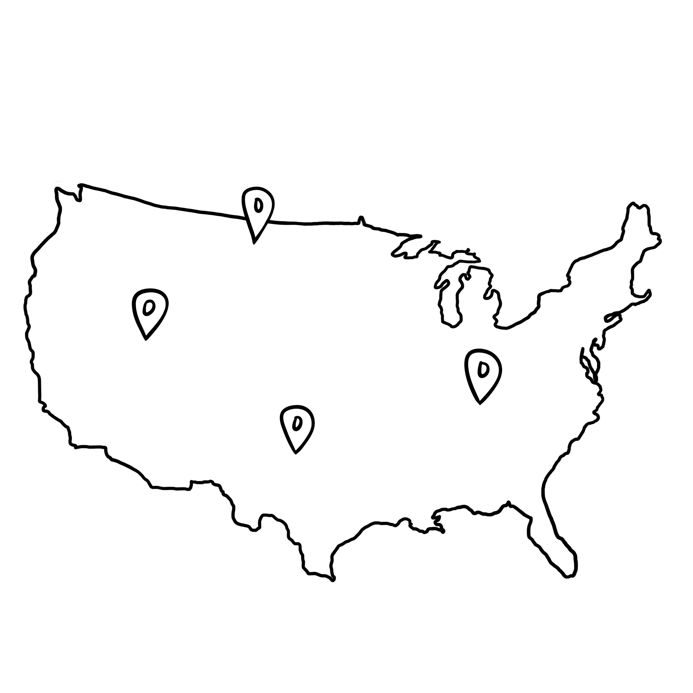

Welcome to my portfolio! My name is Alicia and I'm a student at the University of Washington! I am majoring in economics and my studies in social sciences has led to my interest in UX and UX design as a method of bettering people's lived experiences. This portfolio includes a variety of school work, personal projects, team projects and internship work. Feel free to look around and thank you for your interest!

Conducted stakeholder interviews with ASUW, first year students, transfer students, and prototyped an app for students to connect with other students and campus resources on Figma
Implemented shiny and RStudio to create an interactive website documenting dairy and dairy alternative consumer changes and preferences over the years using USDA data on consumption and production in the dairy industry
Evaluating baby birth weights of nonsmoking compared to smoking mothers using open intro nc data (http://www.openintro.org/stat/data/nc.RData) Using confidence intervals, hypothesis tests, and p values to parameterize the bandwidth of risk associated with smoking during pregnancy
Consulting project for the management of the city of Seattle's 3 municipal golf courses, evaluating the benefit of seasonal rates (green fee structure) and capital improvements, through running economic regressions, setting up behavioral models, and hypothesis tests
During the summer of 2021 I interned at Comcast as a UX Research Analyst Intern. Through this internship I was exposed to both sides of qualitative and quantitative UX methods such as conducting user interviews via userzoom go, data analysis using R and RStudio, survey programming with Qualtrics, retrieving existing and relevant research from the Looker database to inform current and future research projects and general workshopping and brainstorming through Miro and Freehand.